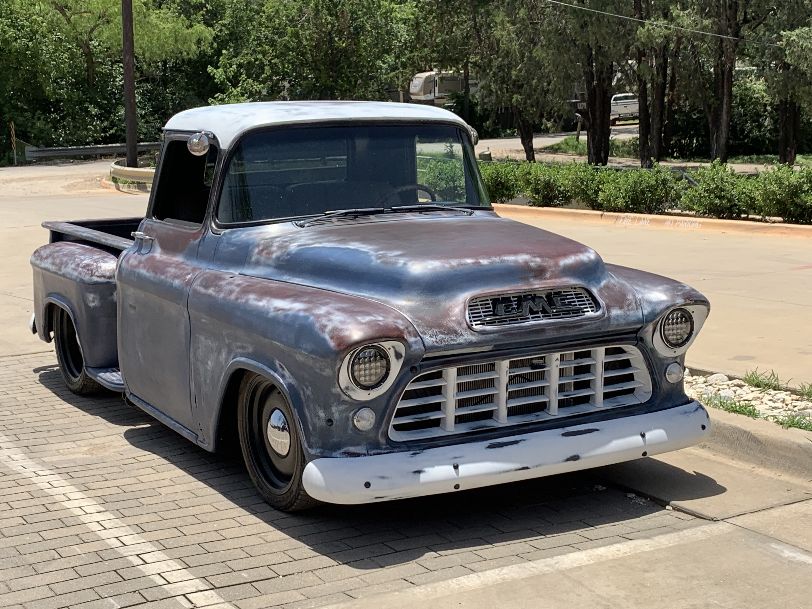
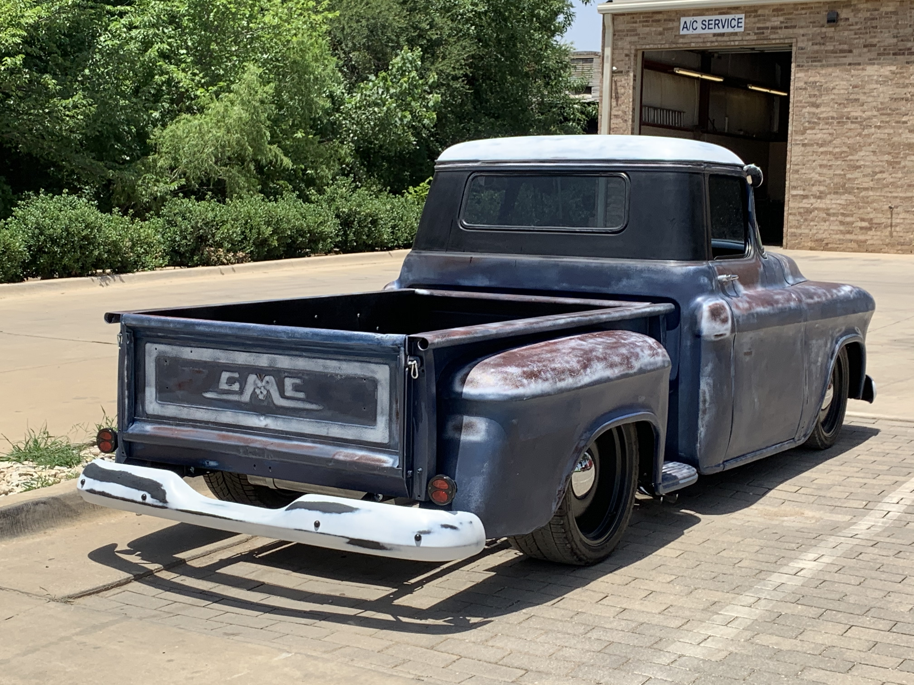

As a kid growing up I would play with HotWheels and build model trucks. As I got older and started working, this pasion only grew into bigger and more costly toys. At this point my lastest project is nearly complete. I got this 1956 GMC in late 2016 a project and had a vision of what I wanted to do. The truck was 60 years old and in need of a toatl overhaul. I knew I wanted it to be reliable and easy to handle. I began to tear into everything to see how much I would
need to go into it to get it where I wanted.


I choose to have the independent front suspension from a gen 3 camaro graphed in to the front of the truck. This would give is superior performance and handling over the old leaf spring as well as a lower stance. Along with the drilled and slotted rotors and coilovers in all 4 corners, the truck handles amazing and brakes quickly. The power that was to be put to the ground was lacking in the truck by todays standards, so I swap it for a more modern LS platform. I went with the Vortec 5.3L/4l60E combonation for great power and tuning potential. These engines are cheap to modify and parts are readily available.